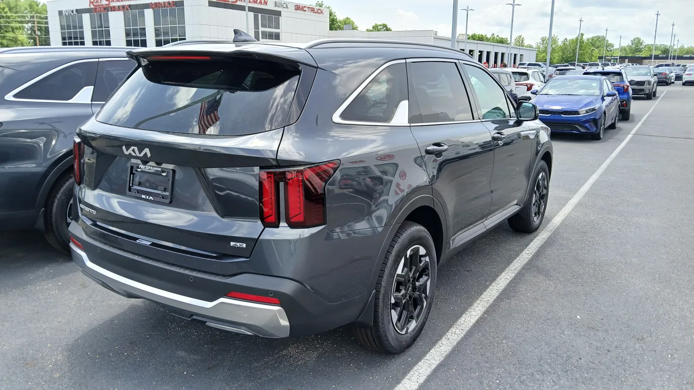
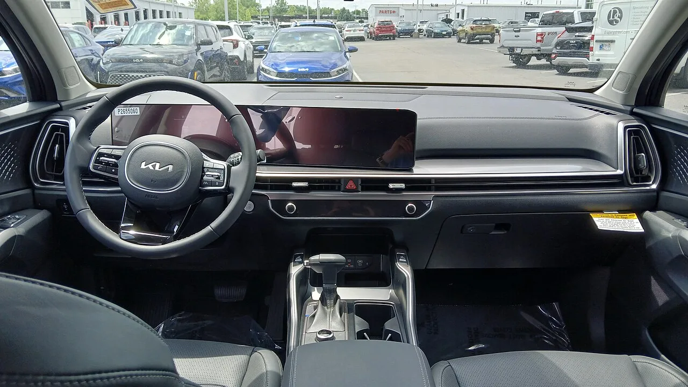

▲ 기아 쏘렌토 디젤. 국내 디젤차 시장이 3년 만에 93% 축소되는 흐름 속에서, 쏘렌토 역시 디젤 단종 수순을 밟은 대표적인 모델이다
국내 디젤차 시장이 사실상 붕괴 수준의 축소를 겪고 있습니다. 2023년 29만2,030대였던 디젤차 신규 등록은 2024년 12만7,638대(56.3% 감소), 2025년 8만4,098대(34.1% 감소)를 거쳐, 2026년 상반기에는 2만603대(전년 동기 대비 59.5% 감소)까지 떨어졌습니다. 3년 누적으로 보면 약 93%가 사라진 셈입니다.
1. 신차 100대 중 디젤은 2대
점유율로 보면 하락세가 더 극적으로 드러납니다. 2025년 상반기까지만 해도 디젤차는 전체 신차 시장의 약 6%대를 차지했습니다. 하지만 2026년 상반기에는 2.4%까지 떨어졌습니다. 신차 100대를 세워놓고 보면 그중 디젤차는 이제 겨우 2대뿐이라는 뜻입니다. 한때 국내 SUV·중대형 세단 시장을 지배했던 파워트레인이, 불과 몇 년 사이 시장의 변방으로 밀려난 셈입니다.

▲ 쏘렌토 디젤 후면. 2002년 출시 이후 24년 만에 신규 생산이 중단되며 디젤 시대의 상징적 종언을 알렸다
2. 하이브리드가 채운 디젤의 빈자리
디젤차가 빠진 자리는 하이브리드가 채웠습니다. 2026년 상반기 신차 판매 구성을 보면 하이브리드가 34.1%(28만9,814대)로 가장 큰 비중을 차지했고, 순수전기차 23.3%, 수소전기차 0.4%(3,175대, 전년 대비 146.5% 증가)가 뒤를 이었습니다. 순수 내연기관 비중은 전년 53.7%에서 42.0%로 줄었습니다. "연비는 역시 하이브리드"라는 인식이 자리 잡으면서, 디젤이 오랫동안 독점해온 '고연비·저유지비' 영역을 하이브리드가 대체한 것입니다.
| 파워트레인 | 비중 |
|---|---|
| 순수 내연기관 | 42.0% |
| 하이브리드 | 34.1%(28만9,814대) |
| 순수전기차 | 23.3% |
| 수소전기차 | 0.4%(3,175대, +146.5%) |
| 디젤(참고) | 2.4%(2만603대) |

▲ 쏘렌토 디젤 실내. 완성차 업체들이 신차 라인업에서 디젤 트림을 잇달아 삭제하면서, 소비자의 선택지 자체가 줄어든 것도 감소를 가속화했다
3. 상용차 조업 중단까지 겹친 복합 요인
디젤차 감소에는 여러 요인이 동시에 작용했습니다. 우선 친환경차가 전체 시장의 57.8%를 차지할 만큼 전동화 전환이 빠르게 진행되고 있습니다. 여기에 국내 중대형 상용차 제조사들의 조업 중단이 겹치면서, 상용 디젤차 생산 자체가 위축됐습니다. 완성차 업체들이 신차 라인업에서 디젤 트림을 하나둘 삭제한 것도 소비자 선택지를 줄이는 방향으로 작용했습니다. 고유가와 환경 규제 강화로 디젤 차량 가격이 상대적으로 오른 것 역시 수요 이탈을 부추긴 요인입니다.
4. 정리 — 디젤 시대의 사실상 종언
3년 만에 93%가 사라진 수치는 단순한 트렌드 변화를 넘어, 국내 자동차 시장에서 디젤이라는 파워트레인 자체가 저물고 있다는 신호로 읽힙니다. 앞서 다룬 쏘렌토 디젤의 24년 만의 단종 사례처럼, 앞으로 남은 디젤 모델들도 순차적으로 하이브리드나 전기차로 전환될 가능성이 높습니다. 디젤차를 여전히 선호하는 소비자라면, 남아있는 재고와 신차 물량이 갈수록 줄어들 것이라는 점을 감안해 구매 타이밍을 고민해야 할 시점입니다.